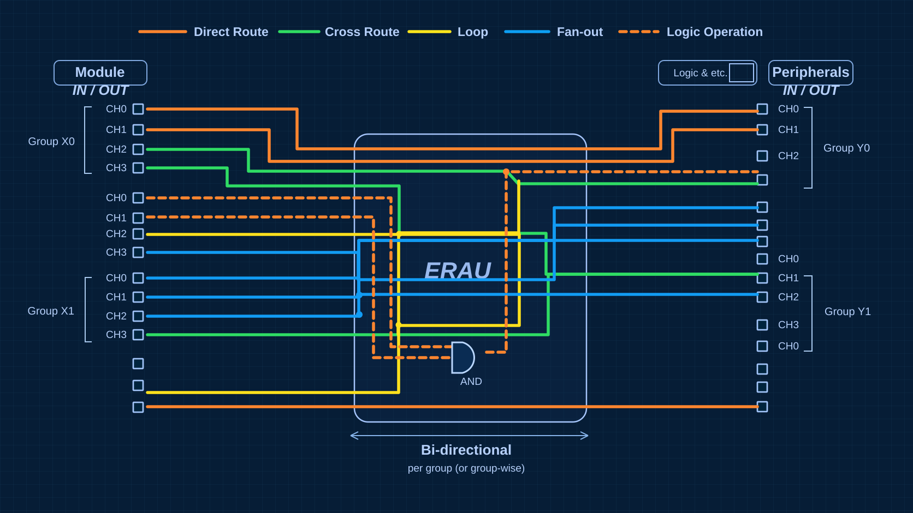

01 / PLATFORM
01 / PLATFORMUniJack™
The base platform connecting the controller, expansion interfaces and ERAU routing fabric.
View UniJack detailsA modular hardware platform connecting your controller, I/O and peripherals through ERAU.

UniJack brings the controller module and peripheral interface together on a modular base. See how the hardware fits, connects and routes signals.

UniJack, Mercury and PeriBoard form the modular assembly. Select a component to see where it fits.
3D motion illustrates the assembly; refer to TBench hardware documentation for mechanical specifications.
Explore the color-coded signal paths of the ERAU routing fabric between the module and peripherals, following the routing template supplied by TBench.

Three core components.
Designed to work together.
01 / PLATFORMThe base platform connecting the controller, expansion interfaces and ERAU routing fabric.
View UniJack details 02 / CONTROLLER
02 / CONTROLLER 03 / EXPANSION
03 / EXPANSIONThe peripheral interface board for adding and testing connected hardware.
View platform detailsEvaluate controller functionality, I/O and peripherals on a modular hardware platform.
Demonstrate the relationship between modules, interfaces and signal routing.
Explore application-specific peripherals with the TBench team.
For product specifications, application questions or integration discussions, connect with TBench directly. You can also follow the Crowd Supply campaign for updates.
Product descriptions and specifications are published by TBench on its UniJack product page and Crowd Supply campaign. They remain vendor-stated, with no independent hardware validation supplied for this website.
The 3D views use the detailed photo-based reconstruction, with raised chips, open connector shells, contact pins and board materials informed by the campaign photographs. Module and connector proportions use reference dimensions; board outlines, component heights, housing lengths and placement remain estimates. The fitted connector part numbers are unconfirmed. This is an illustrative model, not measured CAD. Signal animations explain a concept; their paths, speeds and colors do not represent hardware measurements. No product certification or timing guarantee is claimed.
Photography credited to TBench Solutions / Crowd Supply. Product images and diagrams are provided for information; confirm specifications and availability with TBench.